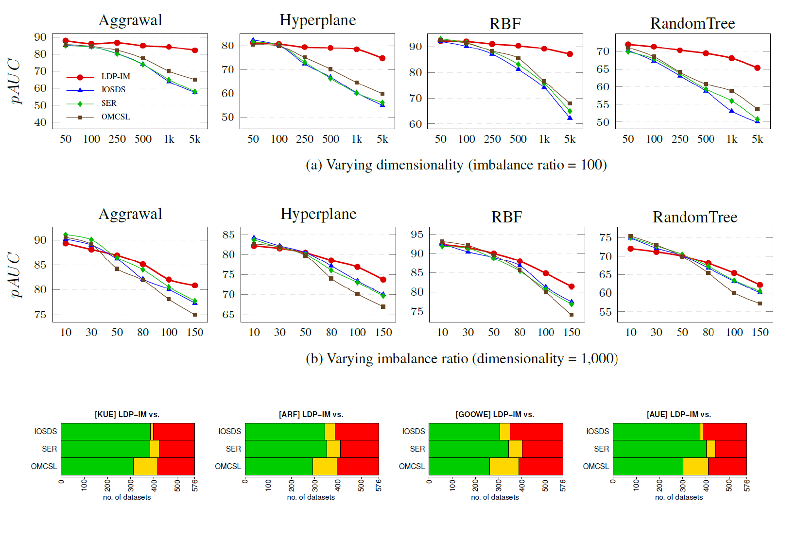

Research
Instance Exploitation for Learning Temporary Concepts from Sparsely Labeled Drifting Data Streams
Ł. Korycki, B. Krawczyk
Dealing with dynamic and everlasting problems poses new challenges for which traditional batch-based offline algorithms turn out to be insufficient in terms of computational time and predictive performance. One of the most crucial limitations is that we cannot assume having access to a finite and complete data set - we always have to be ready for new data that may complement our model. This poses a critical problem of providing labels for potentially unbounded streams. In the real world, we are forced to deal with very strict budget limitations, therefore, we will most likely face the scarcity of annotated instances, which are essential in supervised learning. In our work, we emphasize this problem and propose a novel instance exploitation technique. We show that when: (i) data is characterized by temporary non-stationary concepts, and (ii) there are very few labels spanned across a long time horizon, it is actually better to risk overfitting and adapt models more aggressively by exploiting the only labeled instances we have, instead of sticking to a standard learning mode and suffering from severe underfitting. We present different strategies and configurations for our methods, as well as an ensemble algorithm that attempts to maintain a sweet spot between risky and normal adaptation. Finally, we conduct a complex in-depth comparative analysis of our methods, using state-of-the-art streaming algorithms relevant to the given problem.
Pattern Recognition, 2022.
Streaming Decision Trees for Lifelong Learning
Ł. Korycki, B. Krawczyk
Comprehensive studies focused on incremental neural networks have shown that these models tend to struggle with remembering previously learned patterns. This issue known as catastrophic forgetting has been widely studied and addressed by several different approaches. At the same time, almost no research has been conducted on online decision trees in the same setting. In this work, we identify the problem by showing that streaming decision trees (i.e., Hoeffding Trees) fail at providing reliable long-term learning in class-incremental scenarios, which can be further generalized to learning under temporal imbalance. By proposing a streaming class-conditional attribute estimation, we attempt to solve this vital problem at its root, which, ironically, lies in leaves. Through a detailed experimental study we show that, in the given scenario, even a rough estimate based on previous conditional statistics and current class priors can significantly improve the performance of streaming decision trees, preventing them from catastrophically forgetting earlier concepts, which do not appear for a long time or even ever again.
The European Conference on Machine Learning and Principles and Practice of Knowledge Discovery in Databases (ECML PKDD 2021), Bilbao, Spain, 2021.
Class-Incremental Experience Replay for Continual Learning under Concept Drift
Ł. Korycki, B. Krawczyk
Modern machine learning systems need to be able to cope with constantly arriving and changing data. Two main areas of research dealing with such scenarios are continual learning and data stream mining. Continual learning focuses on accumulating knowledge and avoiding forgetting, assuming information once learned should be stored. Data stream mining focuses on adaptation to concept drift and discarding outdated information, assuming that only the most recent data is relevant. While these two areas are mainly being developed in separation, they offer complementary views on the problem of learning from dynamic data. There is a need for unifying them, by offering architectures capable of both learning and storing new information, as well as revisiting and adapting to changes in previously seen concepts. We propose a novel continual learning approach that can handle both tasks. Our experience replay method is fueled by a centroid-driven memory storing diverse instances of incrementally arriving classes. This is enhanced with a reactive subspace buffer that tracks concept drift occurrences in previously seen classes and adapts clusters accordingly. The proposed architecture is thus capable of both remembering valid and forgetting outdated information, offering a holistic framework for continual learning under concept drift.
IEEE/CVF Conference on Computer Vision and Pattern Recognition (CVPR) Workshops, Nashville, USA, 2021.
Concept Drift Detection from Multi-Class Imbalanced Data Streams
Ł. Korycki, B. Krawczyk
While there exists a plethora of drift detectors, all of them assume that we are dealing with roughly balanced classes. In the case of imbalanced data streams, those detectors will be biased towards the majority classes, ignoring changes happening in the minority ones. Furthermore, class imbalance may evolve over time and classes may change their roles (majority becoming minority and vice versa). This is especially challenging in the multi-class setting, where relationships among classes become complex. In this paper, we propose a detailed taxonomy of challenges posed by concept drift in multi-class imbalanced data streams, as well as a novel trainable concept drift detector based on Restricted Boltzmann Machine. It is capable of monitoring multiple classes at once and using reconstruction error to detect changes in each of them independently. Our detector utilizes a skew-insensitive loss function that allows it to handle multiple imbalanced distributions. Due to its trainable nature, it is capable of following changes in a stream and evolving class roles, as well as it can deal with local concept drift occurring in minority classes. Extensive experimental study on multi-class drifting data streams, enriched with a detailed analysis of the impact of local drifts and changing imbalance ratios, confirms the high efficacy of our approach.
37th IEEE International Conference on Data Engineering (ICDE), Crete, Greece, 2021.

Low-Dimensional Representation Learning from Imbalanced Data Streams
Ł. Korycki, B. Krawczyk
We propose a novel ensemble approach, where each new base classifier is built using a low-dimensional embedding. We use class-dependent entropy linear manifold to find the most discriminative low-dimensional representation that is, at the same time, skew-insensitive. This allows us to address two challenging issues: (i) learning efficient classifiers from imbalanced and drifting streams without data resampling; and (ii) tackling simultaneously high-dimensional and imbalanced streams that pose extreme challenges to existing classifiers. Our proposed low-dimensional representation algorithm is a flexible plug-in that can work with any ensemble learning algorithm, making it a highly useful tool for difficult scenarios of learning from high-dimensional imbalanced and drifting data streams.
25th Pacific-Asia Conference on Knowledge Discovery and Data Mining (PAKDD), Delhi, India, 2021.
Adversarial Concept Drift Detection under Poisoning Attacks for Robust Data Stream Mining
Ł. Korycki, B. Krawczyk
When dealing with data streams one must consider the possibility of a malicious injection of false data that simulates a concept drift. This adversarial setting assumes a poisoning attack that may be conducted in order to damage the underlying classification system by forcing adaptation to false data. Existing drift detectors are not capable of differentiating between real and adversarial concept drift. In this paper, we propose a framework for robust concept drift detection in the presence of adversarial and poisoning attacks. We introduce the taxonomy for two types of adversarial concept drifts, as well as a robust trainable drift detector. It is based on the augmented Restricted Boltzmann Machine with improved gradient computation and energy function. We also introduce Relative Loss of Robustness - a novel measure for evaluating the performance of concept drift detectors under poisoning attacks. Extensive computational experiments, conducted on both fully and sparsely labeled data streams, prove the high robustness and efficacy of the proposed drift detection framework in adversarial scenarios.
Preprint on arXiv, 2020.

Online Oversampling for Sparsely Labeled Imbalanced and Non-Stationary Data Streams
Ł. Korycki, B. Krawczyk
Learning from imbalanced data and data stream mining are among the most popular areas in contemporary machine learning. There is a strong interplay between these domains, as data streams are frequently characterized by skewed distributions. However, most of the existing works focus only on binary problems, omitting significantly more challenging multi-class imbalanced data. In this paper, we propose a novel framework for learning from multi-class imbalanced data streams that simultaneously tackles three major problems in this area: (i) changing imbalance ratios among multiple classes, (ii) concept drift, and (iii) limited access to ground truth. We use active learning combined with streaming-based oversampling that uses both information about current class ratios and classifier errors on each class to create new instances in a meaningful way. Conducted experimental study shows that our single-classifier framework is capable of outperforming state-of-the-art ensembles dedicated to multi-class imbalanced data streams in both fully supervised and sparsely labeled learning scenarios.
International Joint Conference on Neural Networks (IJCNN), Glasgow, UK, 2020.

Active Learning with Abstaining Classifiers for Imbalanced Drifting Data Streams
Ł. Korycki, A.Cano, B. Krawczyk
When dealing with classification tasks, one has to remember that effective adaptation has to be achieved on weak foundations of partially labeled and often imbalanced data. In our work, we propose an online framework for binary classification, that aims to handle the complex problem of working with dynamic, sparsely labeled and imbalanced streams. The main part of it is a novel active learning strategy (MD-OAL) that is able to prioritize the labeling of minority instances and, as a result, improve the balance of the learning process. We combine the strategy with a dynamic ensemble of base learners that can abstain from making decisions if they are very uncertain. We adjust the abstaining mechanism in favor of minority instances, providing an effective method for handling remaining imbalance and concept drift simultaneously. The conducted evaluation shows that in the challenging and realistic scenarios our framework outperforms state-of-the-art algorithms, providing higher resilience to the combined effect of limited labeling and imbalance.
IEEE International Conference on Big Data (Big Data), Los Angeles, CA, USA, 2019.

Unsupervised Drift Detector Ensembles for Data Stream Mining
Ł. Korycki, B. Krawczyk
Supervised streaming machine learning algorithms require a certain number of labeled instances in order to stay up-to-date. Since high budgets dedicated to this purpose are usually infeasible, we have to limit the supervision as much as we can. One possible approach is to trigger labeling only if a change is explicitly indicated by a detector. While there are several supervised algorithms designed for this purpose, the more practical unsupervised ones are still lacking proper attention. In this paper, we propose a novel unsupervised ensemble drift detector that recognizes local changes in feature subspaces (EDFS) without additional supervision, using specialized committees of incremental Kolmogorov-Smirnov tests. We combine it with an adaptive classifier and update it only if the drift detector signalizes a change. Conducted experiments show that our framework is able to efficiently adapt to various concept drifts and outperform other unsupervised algorithms.
IEEE International Conference on Data Science and Advanced Analytics (DSAA), Washington, D.C., USA, 2019.

Clustering-Driven and Dynamically Diversified Ensemble for Drifting Data Streams
Ł. Korycki, B. Krawczyk
Due to their predictive power and capabilities for handling evolving data, ensemble approaches have proven themselves to be highly effective in data stream mining. One of the key aspects of ensemble learning is diversity among base classifiers – it improves accuracy and allows for anticipating and recovering from concept drifts. It has been shown that while diversity is desirable during changes, it may impede learning when data becomes stationary. In this paper, we present a novel ensemble technique that exploits the idea of dynamic diversification, which increases diversity during changes and reduces it when a stream becomes stable. The algorithm uses online clustering for this task by creating locally specialized base learners trained on spatially related instances. Three control strategies based on the novel range heuristic for managing a trade-off between error (a change indicator) and diversity are utilized. Additionally, two intensification strategies are proposed for exploitation of newly arriving instances, allowing for faster adaptation. Experimental study evaluates the general performance and diversity of the proposed algorithm, proving its capabilities to outperform state-of-the-art ensembles dedicated to drifting data stream mining.
IEEE International Conference on Big Data (Big Data), Seattle, WA, USA, 2018.